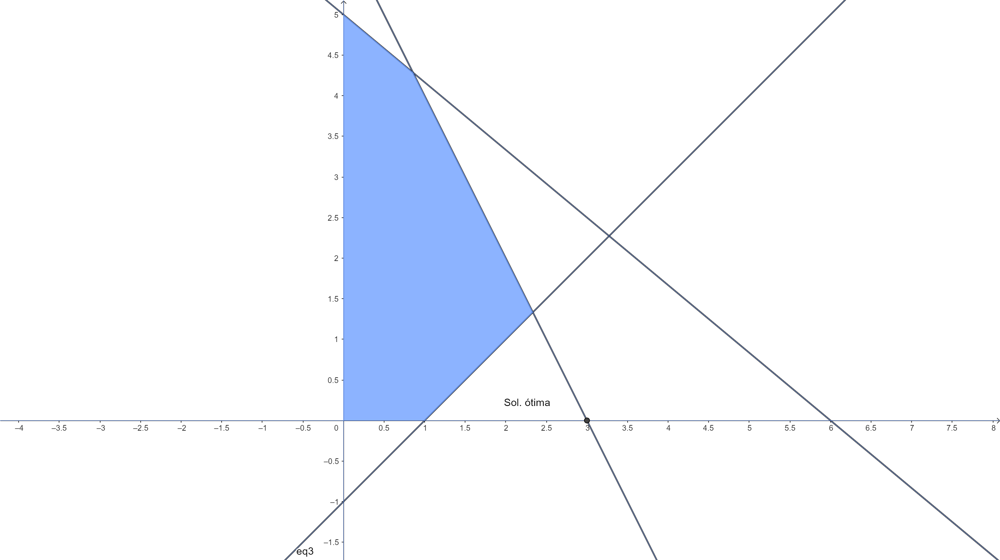

Chapter 7 Algoritmo Dual Simplex
O método Dual-simplex é uma variação do método Simplex, aplicado quando temos infactibilidade primal (\(b < 0\)) e factibilidade dual (\(c_N^T - c_B^TB^{-1}N \geq 0\)). Se as seguintes condições forem satisfeitas, o método poderá ser aplicado:
- Existe uma solução básica (\(x_B\))
- Todos os coeficientes da função objetivo são \(\geq 0\) \((c \geq 0) \rightarrow\) factibilidade dual
- Pelo menos um coeficiente de \(b < 0 \rightarrow\) infactibilidade primal (a solução básica \(x_B\) é infactivel)
O algoritmo fica então:
- (critério de otimalidade): se nenhum \(b < 0\), pare, a solução atual é ótima.
- (seleção da variável que sai da base): selecione a variável que sai da base na linha \(r\), de acordo com:
\(\bar{b}_r = \underset{\{ \forall i \in 1,...,m,\bar{b}_i < 0\}}{min} \bar{b}_i\)
- (seleção da variável que entra da base): selecione a variável da coluna \(s\) de forma que:
\(\dfrac{c_s}{a_{r,s}} = \underset{\{j|j \in N, a_{r,j} < 0\}}{max} \left\{ \dfrac{c_j}{a_{r,j}} \right\}\)
Se todo \(a_{r,j} > 0\), pare, o problema é infactível.
- (pivoteamento): Realize as operações de pivoteamento no elemento \(a_{r,s}\) e volte para 1.
EXEMPLO 1: Resolva o seguinte modelo de PL:
\[\begin{alignat*}{4} & \text{min z = } & 3x_1 & + 4x_2 & + 9x_3 & \\ & \text{Sujeito à} & x_1 & & + x_3 & \geq 5\\ & & & + x_2 & + 2x_3 & \geq 2\\ & & x_1 \geq 0 & \quad x_2 \geq 0 & \quad x_3 \geq 0& \end{alignat*}\]SOLUÇÃO
Adicionando as variáveis de folga:
\[\begin{alignat*}{4} & \text{min z = } & 3x_1 & + 4x_2 & + 9x_3 & \\ & \text{Sujeito à} & x_1 & & + x_3 & -x_4 & & = 5\\ & & & + x_2 & + 2x_3 & & -x_5 & = 2\\ & & x_1 \geq 0 & \quad x_2 \geq 0 & \quad x_3 \geq 0& \end{alignat*}\]Note que nesta etapa teriamos que aplicar o Simplex Fase I (adicionar variáveis artificiais). Porém, se escrevermos o sistema com solução básica \(x_B^T = (x_4,x_5)\) (multiplicando a linha 2 e 3 por -1):
\[\begin{alignat*}{4} & \text{min z = } & 3x_1 & + 4x_2 & + 9x_3 & \\ & \text{Sujeito à} & -x_1 & & - x_3 & + x_4 & & = -5\\ & & & - x_2 & - 2x_3 & & + x_5 & = -2\\ & & x_1 \geq 0 & \quad x_2 \geq 0 & x_3 \geq 0& \end{alignat*}\]Dessa forma todas as condições para aplicação do algoritmo Dual simplex são satisfeitas, colocando na forma tabular:
| VB | X1 | X2 | X3 | X4 | X5 | b |
|---|---|---|---|---|---|---|
| 3 | 4 | 9 | 0 | 0 | 0 | |
| \(x_4\) | -1 | 0 | -1 | 1 | 0 | -5 |
| \(x_5\) | 0 | -1 | -2 | 0 | 1 | -2 |
Selecionamos então o \(x_4\) para deixar a base (min \(\{-5,-2\}\)) e \(x_1\) para entrar na base (máx \(\{\frac{3}{-1},\frac{9}{-1}\}\)).
Atualizando a tabela com as operações:
- \(L_2 \leftarrow L_2/-1\)
- \(L_1 \leftarrow L_1 - 3L_2\)
| VB | X1 | X2 | X3 | X4 | X5 | b |
|---|---|---|---|---|---|---|
| 0 | 4 | 6 | 3 | 0 | -15 | |
| \(x_1\) | 1 | 0 | 1 | -1 | 0 | 5 |
| \(x_5\) | 0 | -1 | -2 | 0 | 1 | -2 |
Selecionamos agora \(x_5\) para deixar a base (min \(\{-2\}\)) e \(x_3\) para entrar na base (máx \(\{\frac{4}{-1},\frac{6}{-2}\}\)).
Atualizando a tabela com as operações:
- \(L_3 \leftarrow L_3/-2\)
- \(L_1 \leftarrow L_1 - 6L_3\)
- \(L_2 \leftarrow L_2 - L_3\)
| VB | X1 | X2 | X3 | X4 | X5 | b |
|---|---|---|---|---|---|---|
| 0 | 1 | 0 | 3 | 3 | -21 | |
| \(x_1\) | 1 | -1/2 | 0 | -1 | 1/2 | 4 |
| \(x_3\) | 0 | 1/2 | 1 | 0 | -1/2 | 1 |
Como \(b > 0\) a solução é ótima, com \(x_B^T = (x_1,x_3) = (4,1)\), com \(z = 21\).
EXEMPLO 2: Considere o modelo do sapateiro:
\[\begin{alignat*}{4} & \text{max z = } & 5x_1 & + 2x_2 \\ & \text{Sujeito à} & 10x_1 & + 12x_2 &\leq 60\\ & & 2x_1 & + x_2 & \leq 6\\ & & x_1 \geq 0 & \quad x_2 \geq 0& \end{alignat*}\]com quadro ótimo:
| VB | X1 | X2 | X3 | X4 | b |
|---|---|---|---|---|---|
| 0 | 1/2 | 0 | 5/2 | 15 | |
| \(x_3\) | 0 | 7 | 1 | -5 | 30 |
| \(x_1\) | 1 | 1/2 | 0 | 1/2 | 3 |
O sapateiro conseguiu um cliente que exige que o número de sapatos produzidos não exceda o número de cintos em mais de 1 unidade (\(x_1 - x_2 \leq 1\)). A solução atual continua ótima? Represente a solução ótima antiga e a nova restrição graficamente e encontre a nova solução ótima usando o método dual simplex.
SOLUÇÃO
Inserindo a variável de folga da nova restrição (\(x_5\)) na base:
\(x_1 - x_2 + x_5 = 1\)
O gráfico com a nova restrição fica:

Vemos que a solução ótima antiga não satisfaz a nova restrição (isso é mostrado no quadro quando mantemos as variáveis \(x_3\) e \(x_1\) na base, e colocamos a variável de folga da nova restrição também na base:
| VB | X1 | X2 | X3 | X4 | X5 | b |
|---|---|---|---|---|---|---|
| 0 | 1/2 | 0 | 5/2 | 0 | 15 | |
| \(x_3\) | 0 | 7 | 1 | -5 | 0 | 30 |
| ?? | 1 | 1/2 | 0 | 1/2 | 0 | 3 |
| \(x_5\) | 1 | -1 | 0 | 0 | 1 | 1 |
Temos que atualizar a tabela (pois \(x_1\) deixou de estar na base):
- \(L_4 \leftarrow L_4 - L3\)
| VB | X1 | X2 | X3 | X4 | X5 | b |
|---|---|---|---|---|---|---|
| 0 | 1/2 | 0 | 5/2 | 0 | 15 | |
| \(x_3\) | 0 | 7 | 1 | -5 | 0 | 30 |
| \(x_1\) | 1 | 1/2 | 0 | 1/2 | 0 | 3 |
| \(x_5\) | 0 | -3/2 | 0 | -1/2 | 1 | -2 |
Temos agora que os critérios para aplicação do método dual são satisfeitos:
Selecionamos agora \(x_5\) para deixar a base (min \(\{-2\}\)) e \(x_2\) para entrar na base (máx \(\{\frac{1/2}{-3/2},\frac{5/2}{-1/2}\}\):
- \(L_4 \leftarrow L_4/(3/2)\)
- \(L_1 \leftarrow L_1 - 1/2L_4\)
- \(L_2 \leftarrow L_2 - 7L_4\)
- \(L_3 \leftarrow L_3 - 1/2L4\)
| VB | X1 | X2 | X3 | X4 | X5 | b |
|---|---|---|---|---|---|---|
| 0 | 0 | 0 | 7/3 | 1/3 | 43/3 | |
| \(x_3\) | 0 | 0 | 1 | -22/3 | 14/3 | 62/3 |
| \(x_1\) | 1 | 0 | 0 | 1/3 | 1/3 | 7/3 |
| \(x_2\) | 0 | 1 | 0 | 1/3 | -2/3 | 4/3 |
Nova solução ótima com \(x_B^T = (x_3,x_1,x_2) = (62/3,7/3,4/3)\)